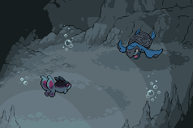

-
Pokémon (an abbreviation for Pocket Monsters in Japan) is a Japanese media franchise managed by The Pokémon Company, a company founded by Nintendo, Game Freak, and Creatures. The franchise was created by Satoshi Tajiri in 1996, and is centered on fictional creatures called "Pokémon". In Pokémon, humans, known as Pokémon Trainers, catch and train Pokémon to battle other Pokémon for sport. All media works within the franchise are set in the Pokemon universe. The English slogan for the franchise is "Gotta Catch ‘Em All!". There are currently 901 Pokémon species. The franchise began as Pocket Monsters: Red and Green (later released outside of Japan as Pokémon Red and Blue), a pair of video games for the original Game Boy handheld system that were developed by Game Freak and published by Nintendo in February 1996.
-
Pokémon has since become the highest-grossing media franchise of all time. The video game series is the fourth best-selling video game franchise with more than 380 million copies sold and one billion mobile downloads, and it spawned an anime television series that has become the most successful video game adaptation with over 20 seasons and 1,000 episodes in 183 countries. In addition, the Pokémon franchise includes the world's top-selling toy brand, the top-selling trading card game with over 34.1 billion cards sold, an anime film series, a live-action film (Detective Pikachu), books, manga comics, music, merchandise, and a temporary theme park. The franchise is also represented in other Nintendo media, such as the Super Smash Bros. series, where various Pokémon characters are playable. .
